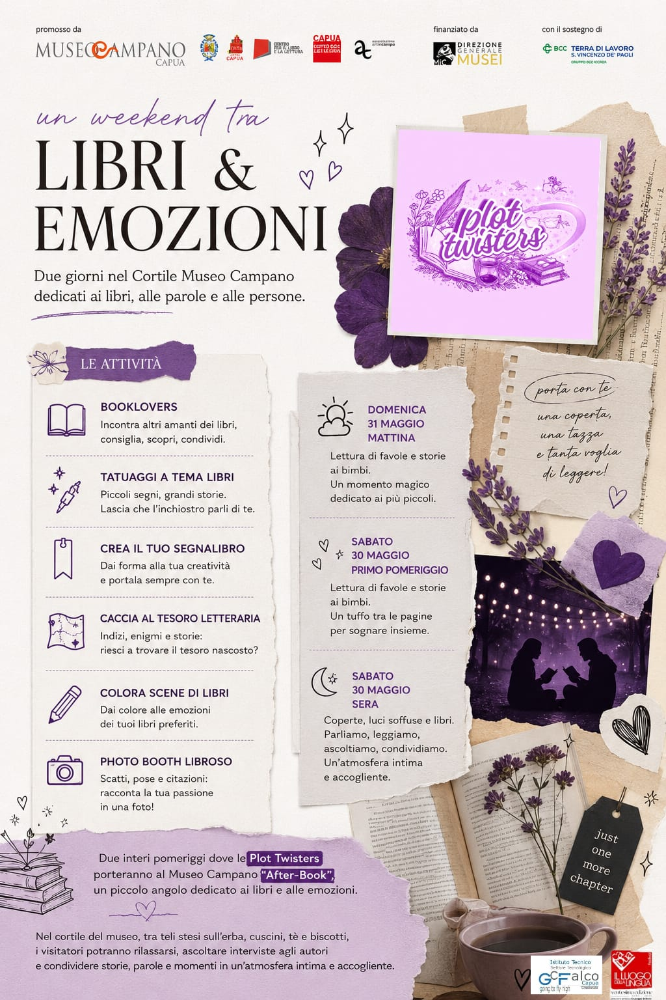

After-Book al Museo Campano
Museo Campano / Libreria Cose d'Interni, Capua
30 – 31 Maggio 2026 • 16:30
Un evento speciale a cavallo di due giorni, il 30 e 31 maggio 2026, dedicato all'arte in tutte her sue forme: dalla letteratura alla pittura, dalla musica alla fotografia. Le Plot Twisters incontrano gli artisti locali di Capua per un dialogo creativo e ispirazionale. Letture ad alta voce, musica dal vivo e un'installazione fotografica apriranno la serata. L'ingresso è libero e aperto a tutta la comunità.
Oggi, domenica 24 maggio, ci troviamo nel pieno dei preparativi febbrili per questo straordinario appuntamento intitolato "Un weekend tra LIBRI & EMOZIONI". Proprio perché mancano ancora pochissimi giorni al debutto, i dettagli logistici più minuziosi, gli orari precisi dei singoli panel e le informazioni tecniche definitive dell'evento arriveranno e saranno pubblicati solo nei prossimi giorni. Nel frattempo, però, vogliamo svelarvi in anteprima assoluta il ricchissimo programma delle attività che abbiamo ideato e che animeranno la splendida cornice del Cortile del Museo Campano di Capua, un luogo intriso di storia e di bellezza che per due intere giornate diventerà il cuore pulsante delle parole, delle relazioni e delle passioni condivise.
Il nostro obiettivo principale è creare un'oasi culturale a cielo aperto, un punto di ritrovo dove gli amanti della lettura e dell'arte possano sentirsi a casa. Tra le attività continuative che abbiamo progettato per tutto il fine settimana, spicca l'area "Booklovers": uno spazio interamente orizzontale in cui sarà possibile incontrare altri appassionati di libri, scambiarsi consigli di lettura spassionati, scoprire nuovi autori ed espandere i propri orizzonti letterari attraverso il dialogo. Per i più audaci e creativi, abbiamo pensato a qualcosa di unico: i "Tatuaggi a tema libri". Si tratterà di piccoli segni grafici temporanei ma ricchi di significato, un modo per permettere all'inchiostro di parlare direttamente della personalità e delle storie impresse sulla pelle di ciascun partecipante. Accanto a questo angolo, prenderà vita il laboratorio "Crea il tuo segnalibro", dove ognuno potrà dare libero sfogo alla propria manualità e fantasia per forgiare un piccolo pezzo d'arte unico da portare sempre con sé tra le pagine dei propri volumi preferiti.
Le attività dinamiche all'interno del cortile non si fermano qui. Abbiamo organizzato una vera e propria "Caccia al tesoro letteraria", un percorso a tappe strutturato su indizi complessi, enigmi affascinanti e storie misteriose nascoste tra le architetture del museo, in cui i partecipanti dovranno sfidare il proprio ingegno per riuscire a scovare il tesoro culturale nascosto. Per chi cerca un momento di puro rilassamento visivo ed emotivo, ci sarà la postazione "Colora scene di libri", un'attività meditativa e artistica pensata per dare letteralmente colore alle emozioni suscitate dalle pagine più celebri della letteratura mondiale. Infine, per immortalare questi momenti indimenticabili, sarà allestito un "Photo Booth Libroso": un set fotografico tematico ricco di oggetti di scena, cornici e citazioni letterarie famose, dove scattare foto divertenti o poetiche, mettendo in posa la propria sconfinata passione per la lettura e raccontando la propria esperienza attraverso un'immagine ricordo.
Il weekend si articolerà attraverso momenti specifici pensati per ogni fascia d'età e per ogni momento della giornata, trasformando l'atmosfera a seconda della luce del sole e delle stelle. La mattina di domenica 31 maggio sarà interamente dedicata ai più piccoli con la "Lettura di favole e storie ai bimbi": un momento magico, intimo e delicato, pensato per avvicinare l'infanzia alla meraviglia della parola scritta. Un appuntamento simile dedicato ai bambini si terrà anche nel primo pomeriggio di sabato 30 maggio, offrendo un vero e proprio tuffo tra le pagine per sognare insieme e stimolare l'immaginazione dei futuri lettori della nostra comunità. Questo viaggio pomeridiano tra le storie preparerà il terreno per la transizione verso i momenti più intensi e suggestivi dedicati al pubblico adulto e agli appassionati di lungo corso.
La sera di sabato 30 maggio l'atmosfera del Cortile del Museo Campano si trasformerà completamente, complici le luci soffuse, la frescura della sera e il fascino della notte capuana. Sarà il momento di "Coperte, luci soffuse e libri", un salotto letterario notturno sotto le stelle dove ci ritroveremo per parlare, leggere ad alta voce e condividere pensieri in un'atmosfera incredibilmente intima, calda e accogliente. Sarà il culmine dell'incontro tra le Plot Twisters e gli artisti del territorio, un dialogo senza filtri in cui le barriere tra autore e lettore si annullano completamente per fare spazio all'empatia e alla pura connessione emotiva attraverso le arti visive, la musica e la scrittura.
Il fulcro emotivo della nostra presenza al Museo Campano si concretizzerà in uno spazio speciale che abbiamo battezzato "After-Book". Per due interi pomeriggi, il club di lettura darà vita a un piccolo e suggestivo angolo protetto e incantato. Immaginate teli candidi stesi ordinatamente sull'erba soffice del cortile, cuscini colorati e comodi su cui abbandonarsi, tazze di tè caldo e biscotti fragranti da gustare in compagnia. In questo contesto bucolico e rilassante, i visitatori potranno staccare la spina dalla frenesia quotidiana, accomodarsi liberamente per ascoltare le interviste dal vivo rivolte agli autori locali, condividere le proprie storie personali e trascorrere momenti di autentica armonia.
Per partecipare a questa straordinaria esperienza comunitaria, vi chiediamo soltanto di portare con voi tre cose fondamentali: una coperta per accomodarvi sul prato, una tazza per gustare il nostro tè e, soprattutto, tanta, tantissima voglia di leggere e di emozionarvi insieme a noi. Segnate sul calendario le date del 30 e 31 maggio 2026 e continuate a seguirci con attenzione nei prossimi giorni. Non appena i dettagli definitivi, gli orari precisi e le ultime indicazioni organizzative saranno pronti, sarete i primi a saperlo. Noi vi aspettiamo a braccia aperte per scrivere insieme questo splendido nuovo capitolo culturale della nostra città.

📌 Un Weekend tra libri ed emozioni - Plot Twisters 📖💜